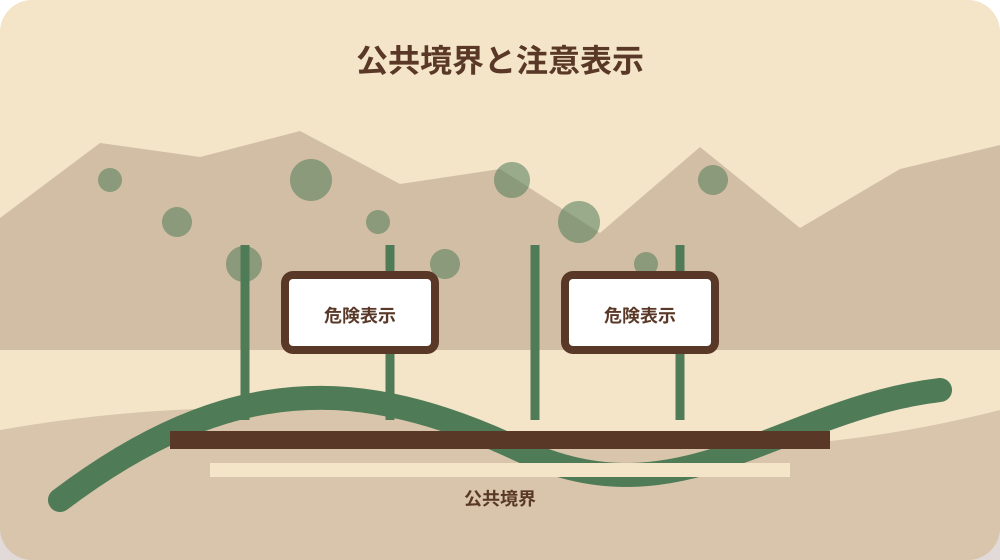
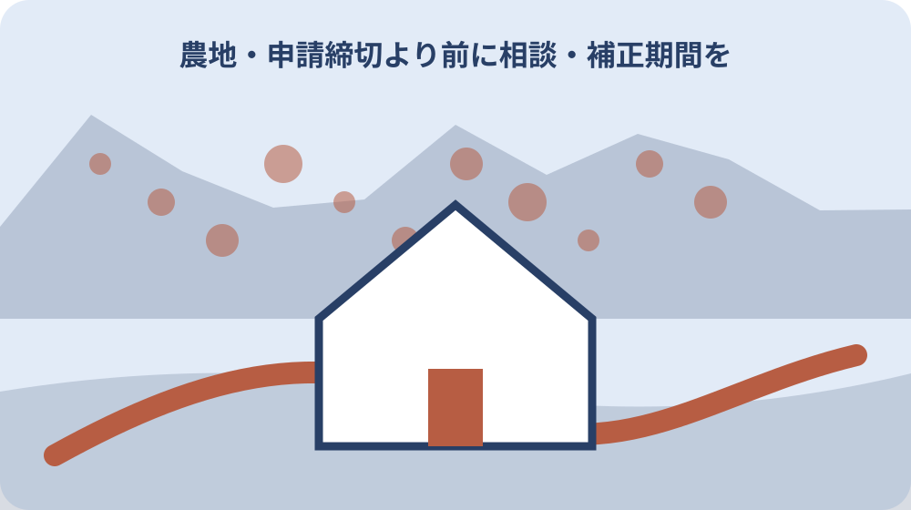

先に結論を確認する
この記事の答え：対象地番、面積、柵線と延長、道路・水路・河川敷等の公共境界、出入口、注意表示、電気柵用電源装置、安全装置、草刈りと点検の動線を一枚にします。補助を使う場合は購入前に、見積書と位置図を森町へ確認します。
森町で最初に照合する条件：補助を利用する場合は資材購入前に、見積書と設置場所の位置図をそろえて森町へ申請時期を確認する。
結論は購入前の一枚安全配置図
森町で電気柵を設置するときは、カタログから機種を選ぶ前に、対象地を上から見た一枚の安全配置図を作ります。地番、面積、柵線、延長、道路・水路・河川敷、出入口、注意表示、電源装置、点検動線を同じ図へ置くと、購入量と安全上の見落としを同時に確認できます。
森町の補助申請では見積書と設置場所の位置図が求められ、申請書には設置する土地、面積、柵の延長等を記載します。その位置図を単なる場所案内で終わらせず、安全設備と管理動線まで追記した作業図に育てるのが本稿の目的です。
配置図には、現地で測った値、地図等から転記した値、購入予定製品の仕様、まだ確認していない点を別記号で載せます。柵線が道路へ近い、草刈り機が通れない、電源まで長い、表示が樹木で隠れるといった問題を、発注後ではなく紙上で見つけます。
この記事は補助額の比較を中心にしません。既存の補助案内を踏まえつつ、購入前の現地確認、安全設備の条件分岐、設置後の点検まで一件の図面へ結ぶことに限定します。最終的な製品選定と電気の接続は、公式案内と製品説明、必要に応じ専門家の確認へ戻します。
地番・面積・柵延長を現地採寸で固定する
配置図の表題欄には設置場所の所在・地番、土地所有者または借受人、作物、被害動物、設置予定日を書きます。家の裏、北側の畑などの呼び方だけでは、申請書、見積書、施工時の場所がずれるため、地番ごとに対象範囲を固定します。
柵延長は土地の面積から概算せず、現地で通す予定線を区間ごとに測ります。角、門、段差、水路横断、電源装置の位置に測点を振り、区間長を合計します。見積数量には余長が必要な場合もあるため、実測延長と購入予定長を別欄にします。
森町の申請書は土地、面積、柵延長等を記載する構成です。配置図、見積書、申請書で数字が異ならないよう、どの測定日と図面版を採用したかを記録します。土地が複数筆なら、筆ごとの面積と全体の柵線を一つの数字に混ぜません。
斜面、石垣、湿地、既設フェンス、農機の旋回場所も現地メモへ入れます。机上の直線で最短距離を引いても、支柱を立てられない場所や日常作業を妨げる場所なら維持できません。設置できる線と管理できる線が一致するかを歩いて確かめます。
測定表には直線距離だけでなく、高低差、角の数、ゲート幅、既設構造物との交点を残します。二人で測る場合は、起点と終点の呼び方を測点番号へ統一し、見積担当者が同じ経路を現地でたどれるようにします。
補助申請の位置図と安全図を同時に作る
森町の補助は町内に農地または山林を所有する人だけでなく、借りている人も対象として案内されています。対象資材には電気柵、メッシュ柵、ネット柵があり、電気柵を選ぶ場合は法令に沿った安全確認が加わります。
補助率は資材購入費の3分の2以内、上限6万円ですが、配置図は補助額を最大にするためではなく、必要な資材を過不足なく数えるために使います。支柱、碍子、電線、ゲート、表示板、電源装置、安全設備を区分し、見積書の項目番号を図上へ対応させます。
森町は既に購入した資材を補助対象外とし、同一申請者の同一年度内の複数回申請を認めていません。被害が出た一画だけを急いで買う前に、同年度に設置したい範囲を一度配置図へ載せ、申請と発注の順序を担当窓口へ確認します。
申請用の位置図を提出した後に柵線や延長を変える必要が生じたら、自己判断で図だけ差し替えず、変更前後を示して森町へ扱いを確認します。安全上の改善で線を内側へ動かす場合も、申請内容と完成状態の差を記録できるよう版番号を付けます。
見積書を比較するときは総額だけでなく、配置図のどの区間に何を使うかを確認します。同じ長さでも角部材、ゲート、表示板、電源方式が違えば内容は変わります。数量が図面に対応しない項目は、発注前の質問として残します。
道路・水路・河川敷との離れを描く
森町の安全案内は、電線や支柱が道路・河川敷等の公共施設にはみ出していないかを確認するよう求めています。配置図では敷地境界の線だけでなく、道路端、水路、法面、河川敷、通学や散歩に使われる通路を別の線種で描きます。
境界位置が明確でないところは、図上で都合よく決めません。公図や測量資料、土地所有者の確認等が必要な保留区間として示し、柵を公共側へ寄せない暫定線を検討します。目標は境界確定ではなく、安全な設置線を決めるために不確かさを見える化することです。
道路側では、車両の乗入れ、草刈り、除雪や側溝清掃、人が退避する余地を観察します。水路側では増水、土の崩れ、管理作業の通路を確認します。柵線と公共施設の間に管理者が歩ける点検帯を置けるか、現地断面の小図を添えます。
隣接する道路や水路の管理者、占用や近接施工の確認が必要かは場所ごとに異なります。配置図へ『無許可でよい』とは書かず、対象区間、相談日、相談先、回答要点を記す欄を設けます。支柱一本でも公共側へ出ない完成確認を写真位置と共に残します。
現地写真は公共施設側から農地を見た向きと、農地側から境界を見た向きの双方を用意します。撮影位置と方角を図に落とせば、後日の傾きや土砂流出を比較でき、単なる施工記念写真で終わりません。
柵線・出入口・草刈り動線を分ける
柵線を閉じた輪として描くだけでは、日常の出入りと点検が抜けます。農機の入口、人だけの点検口、収穫物の搬出口を記号で分け、ゲートを開けたときの電線処理や通電停止の操作位置を図へ置きます。
草が電線へ触れると安全で安定した運用を妨げるため、柵の内外に草刈りできる帯を想定します。刈払機を持って歩ける幅、斜面での足場、電源を切る場所、刈草を置く場所を確認し、支柱を立てた後も一周できる動線を確保します。
柵の角や高低差では電線の張力と地面からの高さが変わりやすくなります。配置図に角番号を振り、完成後の点検写真を同じ番号で保存します。動物種や地形に応じた線の高さ・段数は製品説明と専門的な案内を確認し、一律値を図面へ先書きしません。
作業車が触れやすい箇所、倒木や落枝が起きやすい林縁、増水時に流木が来る箇所には重点点検記号を置きます。最短の柵線より、毎回安全に回れる線を優先する判断が必要です。管理できない区間は設置範囲を見直します。
危険表示を人の近づく方向ごとに置く
農林水産省と森町は、周囲の人が見やすい位置に危険である旨の表示を行うよう案内しています。配置図では表示板を一枚と決め打ちせず、道路、通路、住宅、作業場、出入口など、人が近づく方向を矢印で描いてから候補位置を置きます。
表示板は柵の存在を知っている設置者から見えるだけでは足りません。子ども、配達員、散歩する人、隣地で作業する人の目線と接近経路を現地で確認します。植生や資材で隠れない高さ、夜間や雨天の視認性、文字の劣化も点検項目にします。
ゲートを開けて作業するとき、表示板まで外れてしまう配置は避けます。電源装置付近には操作する人向けの停止・再開手順を別に置き、一般の人向け危険表示と混ぜません。表示内容は製品付属品や公式案内に従い、独自の曖昧な表現へ変えません。
配置図上の表示番号を、現地写真と点検表へ共通して使います。表示板一番は道路側、二番は水路沿いの通路というように置けば、脱落や退色を電話でも特定できます。新しい接近経路ができたら、表示位置を追加して図面版を更新します。
季節によって草木が伸びる場所では、設置時に見えた表示が夏に隠れることがあります。完成確認日だけで済ませず、植生が最も繁る時期にも接近方向から見直す予定を点検表へ入れ、必要なら表示位置を移します。

電気柵用電源装置の位置と仕様を記録する
森町と農林水産省は、適切な電気柵用電源装置の使用を求めています。配置図には単に『電源』と書かず、製品名、型式、入力電源、出力仕様、設置説明書の保管場所、購入予定先を記す機器票を添えます。
電源装置は水没や作業車の衝突を避け、設置者が安全に操作・確認できる位置を選びます。太陽電池式、電池式、家庭用電源利用など方式ごとに必要な確認が変わるため、現場で使う方式が決まる前に配線を描き切らないようにします。
電源装置から柵線までの引込線、接地、開閉操作の位置は、製品の説明に従って図へ反映します。自己流の代用品や直接接続を前提にせず、見積書でも電気柵用として適合する装置であることを型式から確認します。
操作担当者と緊急時の停止方法も機器票へ書きます。設置者が不在のときに誰が停止できるか、鍵やスイッチへ安全に到達できるかを決め、隣人が勝手に触れる配置にはしません。連絡先表示と危険表示の役割も分けます。
停電や電池切れを確認する手順、交換部品の型式、説明書で定める点検方法も機器票へつなぎます。通電の有無を素手で触れて確かめるような手順は作らず、専用の確認方法と製品説明に従います。
漏電遮断器の二条件と専用開閉器を分ける
農林水産省が漏電遮断器を求めるのは、電気柵用電源装置が使用電圧30ボルト以上の電源から供給を受けることに加え、人が容易に立ち入る場所へ電気柵を施設するという二条件が重なる場合です。30ボルト以上という一条件だけを見て、すべての設置で一律必須と読み替えません。
専用開閉器は漏電遮断器とは別の項目です。農林水産省は、電気柵へ電気を供給する電路に、容易に開閉できる箇所の専用開閉器を施設するよう案内しています。配置図でも漏電遮断器の条件判定欄と、専用開閉器の位置・操作確認欄を別々に設けます。
森町の安全案内には、漏電遮断器、変圧器、開閉器、接地等が点検対象の例として図示されています。配置図ではそれらを一律の部品表にせず、採用する電源方式と製品仕様を先に記録し、該当する設備の有無、位置、点検方法を一項目ずつ確認します。
漏電遮断器や変圧器、接地、配線の要否・選定を判断できない場合は、販売店や電気の専門家へ入力電源、機器型式、配線距離、設置場所、人が立ち入る可能性、水濡れの可能性を示します。補助対象経費の確認は森町へ、安全な接続判断は公式説明と専門家へ分けます。

設置後の草・断線・傾きを点検する
森町の安全案内は、柵の切断や破損、草の接触等を点検するよう求めています。完成配置図を点検図へ転用し、柵線を区間番号で分けます。点検日は区間ごとに草、断線、緩み、支柱の傾き、碍子、ゲート、表示板を確認します。
道路・河川敷等へのはみ出しも毎回の確認項目にします。設置時に内側でも、支柱の傾き、地盤の崩れ、枝の落下、作業車の接触で位置は変わります。公共境界に近い重点区間は同じ撮影位置から写真を残します。
電源装置は通電しているかだけでなく、外箱、配線、周囲の水や草を製品説明に従って見ます。採用方式に応じて接地を設けた場合や、二条件に該当して漏電遮断器を設けた場合は、それぞれの状態も点検します。異常時は安全に停止し、修理と再開確認を記録します。
点検頻度は季節、草の伸び、風雨、獣害、農作業に合わせて決めます。台風や大雨、草刈り、農機作業の後を臨時点検のきっかけにし、固定した月一回だけで十分とは考えません。点検者が変わっても同じ区間を回れる配置図にします。
借地・隣接地・作業者への共有欄を作る
借りている農地へ設置する場合、補助対象の案内だけを根拠に自由に施工せず、土地所有者との契約や承諾内容を確認します。支柱、電源、草刈り、撤去、契約終了時の扱いを話し、確認日と連絡先を配置図の当事者欄へ残します。
隣接地の耕作者には、柵線の位置、危険表示、作業時の停止方法、連絡先を必要な範囲で伝えます。隣地へ立ち入る前提や、隣の電源を使える前提で線を引きません。境界や管理者が不明なら保留区間として施工を止めます。
草刈り、収穫、修理を別の人へ頼む場合は、通電停止の担当、停止を確認する方法、再開の担当を作業票へ書きます。『いつも切ってある』という口頭了解に頼らず、作業開始前に機器の状態を確認する手順を共有します。
土地所有者、申請者、設置者、日常管理者、電気の相談先を同じ人物と思い込まないことが重要です。役割表にはできる操作と連絡順を置き、担当変更時には鍵、説明書、完成図、点検履歴をまとめて引き継ぎます。
大石の視点：補助位置図を安全確認へ育てる
ここまでの補助対象、申請前購入が対象外であること、位置図と見積書、危険表示、電源装置、安全設備、公共施設へのはみ出し防止は、森町と農林水産省の案内で確認できる公的事実です。個別の敷地でどの線が最適かは現地条件により異なります。
大石浩之の提案は、補助申請の位置図に安全設備と管理動線を重ね、一枚を購入前・施工時・点検時に使い続けることです。これは森町が定めた様式ではなく、図面の作り直しと安全情報の脱落を減らすための実務上の私見です。
安い資材を先に確保してから場所を決めると、延長不足、道路への接近、表示位置不足、草刈り不能が起きやすくなります。私なら、現地を一周して公共境界と接近方向を描き、次に電源条件、最後に見積数量という順にします。
配置図が完成しても、安全を保証する証明書にはなりません。製品の設置説明、法令に基づく条件、森町の申請案内、現地の管理者確認へ戻る索引として使います。判断できない電気接続や境界を私見で埋めないことが、長く使える図面の条件です。
完成図と点検履歴を次の管理者へ渡す
設置が終わったら、購入前図へ完成位置を反映します。支柱番号、柵線、ゲート、表示板、電源装置、安全設備、接地点、停止操作、公共境界側の離れを現地写真と照合し、予定と違う箇所には変更理由と確認日を書きます。
保管セットは完成配置図、申請・交付関係の控え、見積書と購入記録、製品説明書、機器型式、所有者等との確認、点検表、修理履歴です。補助資料と安全資料を別々の箱にせず、同じ設置案件番号で探せるようにします。
次の管理者へは、通電停止の方法、入力電源と立入条件に基づく漏電遮断器の判定、専用開閉器、採用方式に応じた接地等、注意表示、草刈り動線、公共施設に近い重点区間を現地で渡します。書類だけを置いて操作確認を省きません。
最後に、購入前申請を確認したか、公共側へはみ出していないか、接近方向ごとに表示が見えるか、電源条件に合う安全設備か、一周点検できるかを確認します。この五点が図と現地で一致して初めて、申請用の位置図が安全管理の基準図になります。